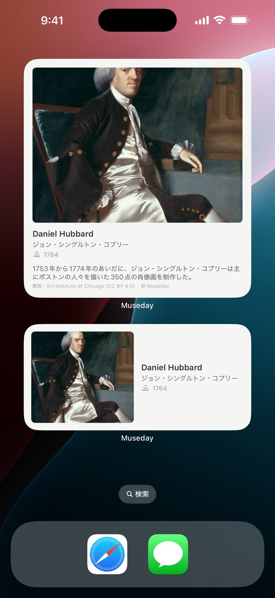

Museday・使い方ガイド・English
毎日1枚の名画をiPhoneのホーム画面に出す方法
ファン・ゴッホ、フェルメール、レンブラント。0時に替わる名画のウィジェットを置けば、スマホを開くたびに小さな美術館をひとめぐりできます。
Musedayでの置き方を紹介します。今日の絵を出すSmallウィジェットは無料です。
1. Musedayを一度開く
Musedayを入れて開くと、最初の画面に今日の絵が出ています。題名・作者・年と所蔵館つきです。「この絵について」から、美術館による作品の解説が読めます。

2. ホーム画面にウィジェットを置く
- ホーム画面の何もないところを長押しして、アプリが揺れるまで待ちます。
- 左上の「編集」（または＋）をタップして、「Museday」を検索します。
- Smallを選んで「ウィジェットを追加」をタップします。
これで完了です。毎日0時に新しい絵に替わります。290人の画家の511枚がすべてアプリに入っているので、通信がなくても毎日替わります。

画像の2つのウィジェットはLargeとMediumで、Museday Proの機能です。無料のウィジェットはSmallで、絵が枠いっぱいに出ます。
3. ロック画面に置く
ロック画面を長押しして「カスタマイズ」から、ウィジェットの欄をタップし、Musedayの「今日の絵（題名）」を追加します。今日の絵の題名と作者が出ます。ロック画面のウィジェットは無料です。
もっと使いたいときは
Museday Pro（買い切り・サブスクではありません）で使えます。
- Medium・Largeのウィジェット：「絵と題名」か「絵のみ」
- 特大のウィジェット（iOS 27）
- お気に入り・テーマ・時代・所蔵館を出すウィジェット（「ウィジェットを編集」の「表示する絵」で選ぶ）
- これまでの全部の絵と、時代・所蔵館・作者での絞り込み
よくある質問
無料で使えますか？今日の絵を出すSmallウィジェットとロック画面のウィジェットは、期限なしで無料です。広告もありません。Museday Pro（買い切り）で、Medium・Large・特大のウィジェット、お気に入り・テーマ・時代・所蔵館を選んで出すウィジェット、これまでの全部の絵が使えます。
絵はいつ替わりますか？毎日0時です。511枚の絵はすべてアプリに入っているので、通信がなくても替わります。
MediumやLargeのウィジェットがぼやけて「Museday Pro」と出ます。Medium・Large・特大のウィジェットはProの機能です。無料版ではSmallを置いてください。
昨日の絵をもう一度見られますか？見られます。今日の画面の「直近7日」から開けます。それより前の日の絵はProで開けます。
App StoreでMusedayを入手
サブスクなし・広告なし・アカウント不要・Musedayについて